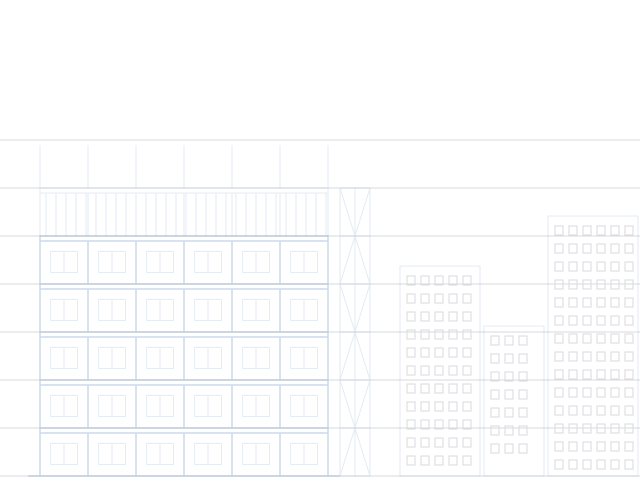

Romain Schrijvers
Élève ingénieur à l’INSA Lyon
2024–2026
Chargé d’affaires, puis responsable commercial d’ETIC, la Junior-Entreprise de l’INSA Lyon. Son mandat : près de 500 k€ de chiffre d’affaires pour ETIC, au sein d’une division d’environ 35 personnes. Il signe lui-même environ 15 projets, pour environ 100 k€.
Depuis avril 2026
Consultant technique chez ETIC, il réalise des prestations pour des clients.
Été 2026
Stage dans un groupe du CAC 40 : audit et amélioration d’un chatbot documentaire (pertinence, contexte, coûts), cartographie des flux du système d’information, qualité et gouvernance des données des API.
Aujourd’hui
À l’origine de Portemine.